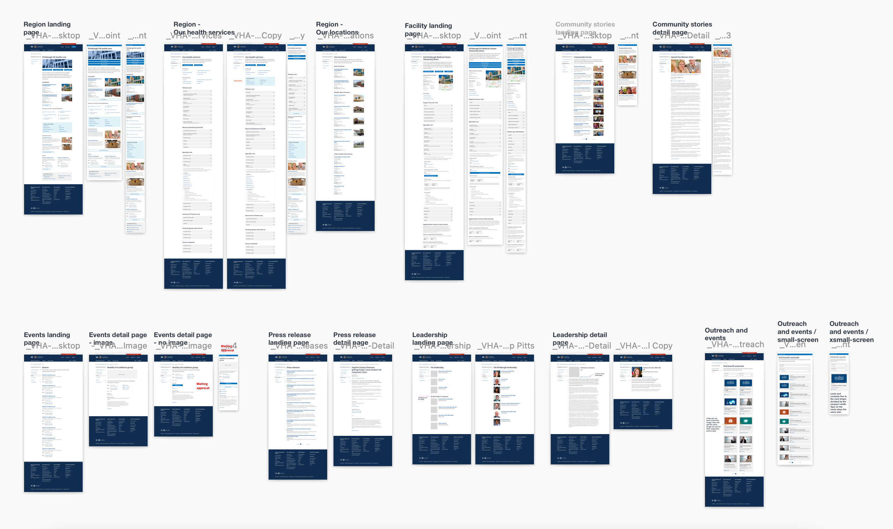

All projects
All projects
Case study: VA Medical Centers
The problem
Veterans told us that VA Medical Center (VAMC) websites are confusing to navigate, contain outdated or missing information, and don’t match their VA health care journey.
Design process
I worked with expert content strategists, researchers, engineers, and product owners to develop a mobile-first user experience that gets users to all content and tools in just 1 to 2 clicks. Using VAMC Pittsburgh as our pilot site, our scrappy team of 5 started at the white board — we determined who our users were and set goals we wanted them to achieve. We spent hours in design studios, brainstorming sessions, user interviews (with Veterans, VA stakeholders and VA medical staff), journey maps, and technical discussions. We then developed the information architecture, wireframes and design comps of a new VAMC website and put them in front of Veterans and VA medical staff to validate our hypothesis and goals. As we collected feedback, we iterated and refined our design decisions.
The solution
An all-new, user-first digital experience for Veterans, family members, and caregivers that provides solutions to key touch points in the end-to-end VA health care journey.
The impact
We streamlined total site pages from 300 to 40 search-engine optimized, Veteran- first pages
We condensed total site word count from 350,000 to 46,000 plain-language words.
We prioritized online tools, location and contact information, and preparing for your visit information based on Veteran feedback.
We provided interconnectivity to primary and secondary benefits that VA provides (e.g. applying for health care online, Service benefits, family member benefits).
We made wait times availible to users.
My role
As the sole visual designer on the team, it was my responsibilty to create all templates with design guardrails that adhered to the VA design system, but also played nice with Drupal. I also collaborated with our team in stakeholder management, user research, and product strategy — basically every step of the way.
The product evolution
Before
Legacy VAMC home page
After
New VAMC home page
Before
Legacy VAMC location page
After
New VAMC location page
System-wide improvements by component

Mobile, tablet, and desktop designs for VAMC templates
Overview of page templates for VAMCs
All projects